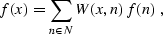
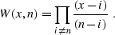
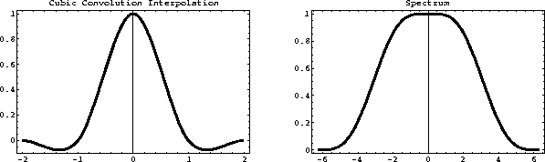
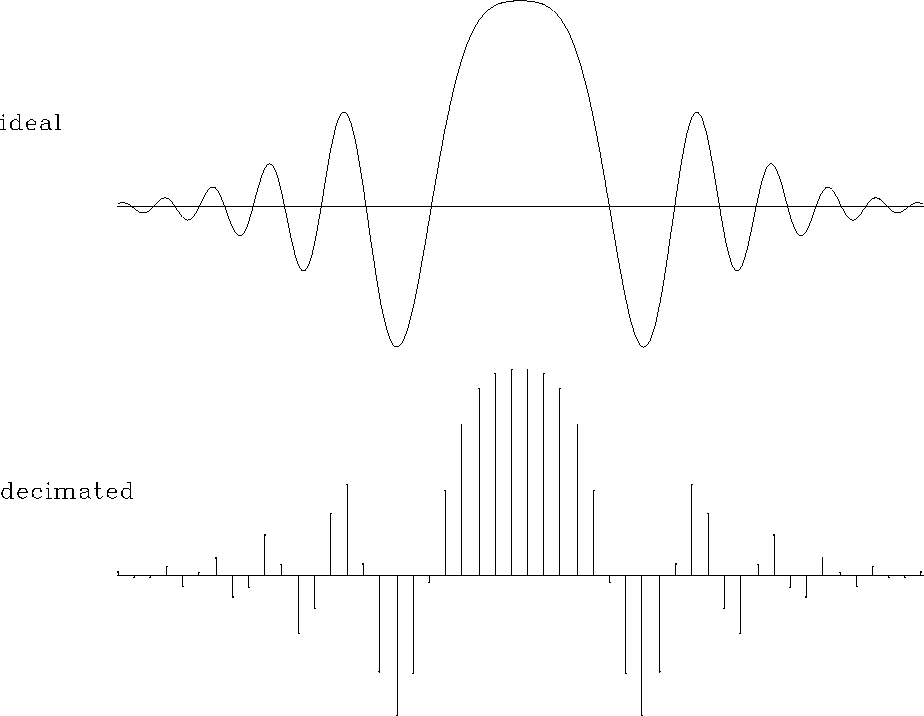

Mathematical interpolation theory considers a function f, defined on a regular grid N. The problem is to find f in a continuum that includes N. I am not defining the dimensionality of N and f here because it is not essential for the derivations. Furthermore, I am not specifying the exact meaning of ``regular grid,'' since it will become clear from the analysis that follows. The function f is assumed to belong to a Hilbert space with a defined dot product.
If we restrict our consideration to a linear case, the desired solution will take the following general form
|  | (26) |
![[*]](interpolation_files/cross_ref_motif.gif) ) transforms to an integral in dn. Two general
properties of the linear weighting function W (x, n) are evident
from formula ().
) transforms to an integral in dn. Two general
properties of the linear weighting function W (x, n) are evident
from formula ().Property 9334
| |
(27) |
Equality () is necessary to assure that the interpolation
of a single spike at some point n does not change the value f (n)
at the spike.
Property 9338
| |
(28) |
This property is the normalization condition. Formula ()
assures that interpolation of a constant function f(n) remains
constant.
One classic example of the interpolation weight W (x, n) is the Lagrange polynomial, which has the form
|  | (29) |
![[*]](interpolation_files/foot_motif.gif) . The local 1-point Lagrange interpolation is equivalent
to the nearest-neighbor interpolation, defined by the formula
. The local 1-point Lagrange interpolation is equivalent
to the nearest-neighbor interpolation, defined by the formula
| |
(30) |
| |
(31) |
Because of their simplicity, the nearest-neighbor and linear
interpolation methods are very practical and easy to apply. Their
accuracy is, however, limited and may be inadequate for
interpolating high-frequency signals. The shapes of
interpolants () and () and their spectra are
plotted in Figures and . The spectral
plots show that both interpolants act as low-pass filters, preventing
the high-frequency energy from being correctly interpolated.
 |
 |
The Lagrange interpolants of higher order correspond to more complicated polynomials. Another popular practical approach is cubic convolution Keys (1981). The cubic convolution interpolant is a local piece-wise cubic function:
 |
(32) |
) and its spectrum are plotted
in Figure .
|  |
I compare the accuracy of different forward interpolation methods on a
one-dimensional signal shown in Figure . The ideal
signal has an exponential amplitude decay and a quadratic frequency
increase from the center towards the edges. It is sampled at a regular
50-point grid and interpolated to 500 regularly sampled locations. The
interpolation result is compared with the ideal one.
Figures and show the interpolation
error steadily decreasing as we proceed from 1-point nearest-neighbor
to 2-point linear and 4-point cubic-convolution interpolation. At the
same time, the cost of interpolation grows proportionally to the
interpolant length.
|
chirp
Figure 4 One-dimensional test signal. Top: ideal. Bottom: sampled at 50 regularly spaced points. The bottom plot is the input in a forward interpolation test. |  |
|
binlin
Figure 5 Interpolation error of the nearest-neighbor interpolant (dashed line) compared to that of the linear interpolant (solid line). |  |
|
lincub
Figure 6 Interpolation error of the linear interpolant (dashed line) compared to that of the cubic convolution interpolant (solid line). |  |
{kind=link}
{kind=link}
{kind=link}